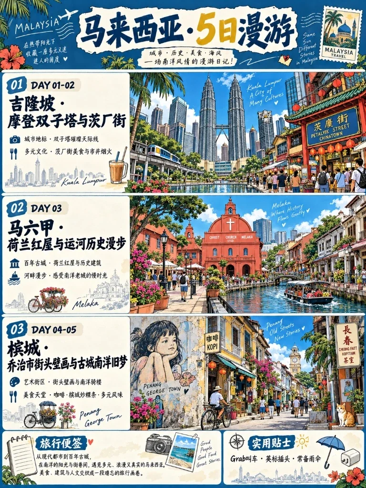

IG-032 · 4:5
IG-032 · 4:5CT-01知识科普
594 条上游素材 + 60 个精选场景。挑一个成品配方，写一句主题，剩下 5 个参数已经配好——拼装器按素材原文，把你的主题和这些参数拼成一段可直接出图的提示词。
IG-032 · 4:5
IG-003 · 3:4 IG-034 · 16:9
IG-034 · 16:9 SC-001 · 4:5
SC-001 · 4:5 SC-016 · 3:4
SC-016 · 3:4 SC-021 · 3:4
SC-021 · 3:4 EC-008 · 4:3
EC-008 · 4:3 IP-001 · 1:1
IP-001 · 1:1素材与提示词来自 yang0/handraw-style（v1.9.13，编号与原库一致，未作改写）· MIT License with Attribution Requirement · 首次浏览时按需下载示例图，可在右上「同步素材」一次性缓存全部 594 张。
排版图型（IG-032）：小红书信息图。排版：手绘编辑式知识信息图。采用“顶部超大标题 + 中部大型核心主视觉 + 周边多个带数字编号的知识点模块 + 底部总结区”的构图。核心主视觉明显大于其他元素，作为全图视觉中心；周围自然环绕分布 4–8 个知识点模块，每个模块带有清晰醒目的数字序号（如 01、02、03、04）建立列表感与阅读动线。每个编号模块包含短标题、简短说明和一个小型视觉解释（如小场景插图、图标、对比、流程、思维泡泡或微型漫画）。模块围绕核心视觉灵活排布，非僵硬规则宫格，允许箭头、标签、对话气泡与手写注释穿插连接。底部设置一句话总结、关键词提炼或 checklist 清单区收束全图。整体呈现杂志编辑插画、知识信息图与轻漫画叙事融合的生动手绘质感。角色高度概括，构图简洁，较多留白。